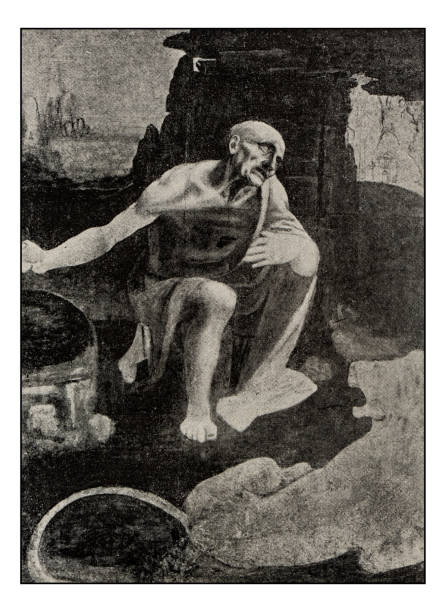
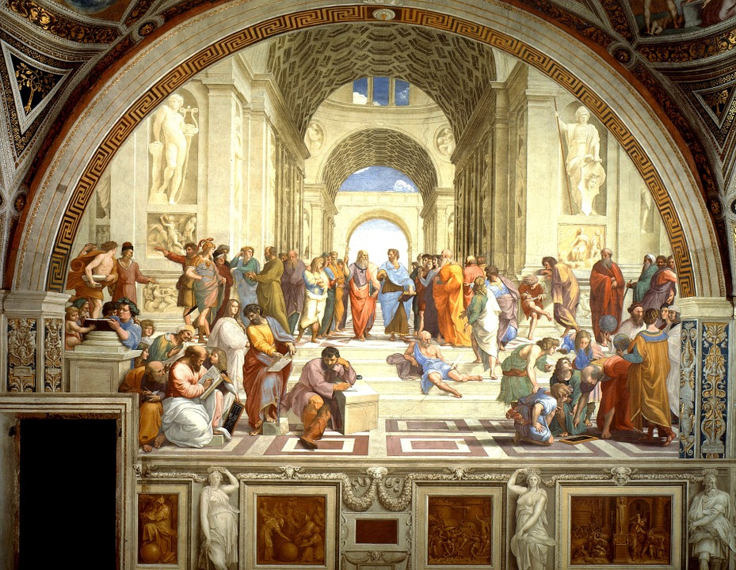
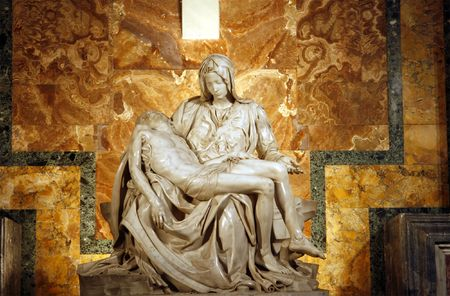
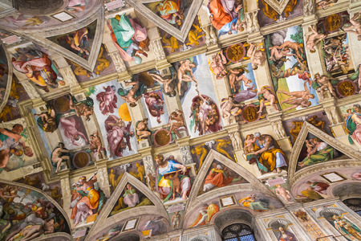
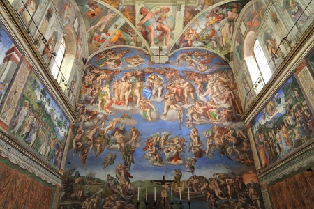
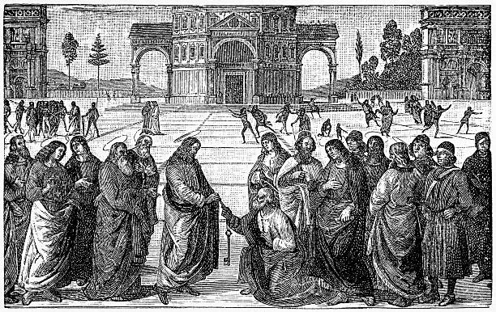

The Vatican City
Works
Here are some works of the Vatican :
Saint Jérôme by Léonard de Vinci, ca. 1482
Oil on wood, cm 103 x 74

Raphael, Fresco,440 × 770 cm, 1508-1512, Vatican Museum

La pieta of Michelangelo
1497-1499
Carrara marble
174 × 195 × 69 cm

Vault of the Sistine Chapel (the ceiling) 1508–1512, 40 m x 14 m, Fresco

Last Judgment, Sistine Chapel, Michelangelo , 1535–1541,14 m x 12 m,

Christ giving the keys to St. Peter, Le Périgin,1482, 335 × 550 cm, Fresco
